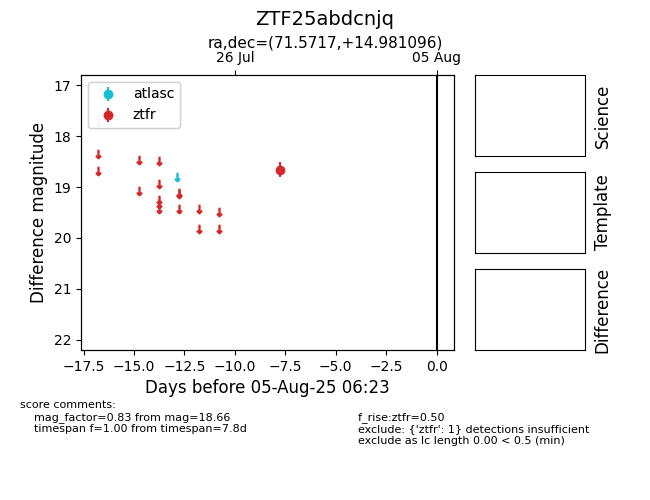

Target ZTF25abdcnjq at 2025-08-05 07:33, see:
FINK: fink-portal.org/ZTF25abdcnjq
Lasair: lasair-ztf.lsst.ac.uk/objects/ZTF25abdcnjq
ALeRCE: alerce.online/object/ZTF25abdcnjq
alt names
ZTF25abdcnjq (ztf,fink)
coordinates:
equatorial (ra, dec) = (71.5717,+14.98110)
galactic (l, b) = (183.8668,-19.18517)
photometry
last ztfr=18.66
1 ztfr detections
